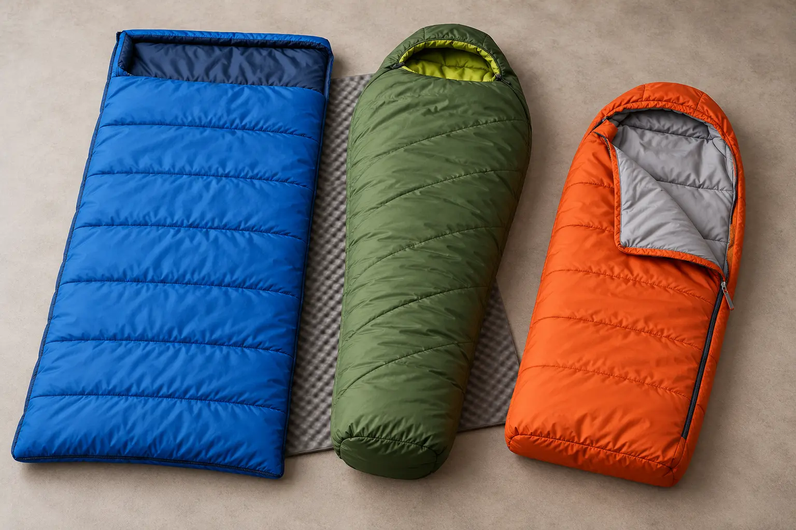

Rectangle
Fits: warm-weather car camping, active sleepers and children who hate a tight footbox.
Tradeoff: more empty air, bulk and draft potential; often too large for a small child.
CAMPING GEAR · SCHOOL-AGE KIDS · CLAIM BEFORE COLOR
The number on a child’s bag is not an ISO adult rating. Start with the forecast and insulated pad, then choose present fit, usable ventilation and a manufacturer claim you can actually explain.

The International Organization for Standardization says ISO 23537-1:2022 specifies test and labeling provisions for adult-sized recreational sleeping bags at applicable limit temperatures. The same official abstract says the document does not apply to children or babies because no prediction model exists for determining child and baby limiting temperatures from bag thermal resistance.
That changes the shopping question. Do not compare two youth bags as if a “30°F” label on each came from one adult laboratory method. Ask the maker what the number means, whether a published test method supports it, what clothing and pad assumptions were used, and whether the value is comfort guidance, a survival-oriented limit, or marketing shorthand. If the answer is vague, the number is not precise enough to run the family’s safety margin.
Sleeping bags compress under body weight. The ground system must slow heat loss below the sleeper. Choose the insulated sleeping pad and campsite first, then evaluate the bag as part of the complete system. The existing family camping sleep-system guide explains pad, bag and dry-clothing roles together.
Compare a pad’s maker-stated R-value, size, valve, maximum load, repair method and intended use. Do not stack pads unless the manufacturers permit the arrangement and the stack is stable. A high bag number cannot compensate for a leaking pad, cold vehicle floor, wet site or air moving below a raised cot. If the pad cannot stay inflated through a home test, fix or replace the pad before shopping for a warmer bag.
Use the National Weather Service point forecast for the exact campground and check the hourly low, wind, precipitation and weather alerts again before departure. Site elevation, valley cold, humidity and a wet tent can differ from a city forecast. Select a trip where the expected overnight conditions sit comfortably inside the family’s known system and experience. This guide does not assign a universal number because children, bags, pads, clothing, shelter and conditions are not interchangeable.
The National Weather Service warns that hypothermia can be life-threatening and lists warning signs including uncontrolled shivering, confusion, slurred speech, drowsiness and exhaustion. A child who is wet, persistently cold, unusually quiet, clumsy, confused or hard to wake does not need another layer experiment. Move to shelter, replace wet clothing, seek appropriate medical help and follow emergency guidance. Never wait for a bag to prove its label.
Measure standing height, shoulder width and relaxed hip position in the sleep clothing the child will use. Compare the maker’s current user dimensions rather than the package age range alone. Too much length and girth can create excess space the child must warm; too little can compress insulation, restrict movement or put the face in the hood.
Have the child lie on the real pad, roll to both sides, bend knees, sit up, reach the zipper and exit without adult rescue. Keep the face fully uncovered. Never close a drawcord, hood or flap in a way the maker does not instruct. This guide is for school-age camping decisions; it is not infant sleep guidance, and camping sleeping bags are not a substitute for a baby’s safe sleep environment.
Synthetic insulation is often less expensive, can be easier to manage around damp family camping and may dry faster, but exact performance depends on fiber, construction and care. Down insulation can offer high warmth for packed size, but fill power alone is not a bag temperature guarantee and moisture management matters. Down treatment, baffle design, total fill, shell, fit and storage all affect the finished system.
Read the exact fill, shell, lining, water-protection claim and washing instructions. “Water-resistant” is not waterproof. Avoid sleeping in wet clothing, and do not use a heater, hot rock, stove or fuel-burning appliance inside a tent to warm the bag. If the maker requires loose storage between trips, do not leave the bag crushed in its travel sack all season.
A two-way zipper can vent feet but may add snag points. A short zipper can reduce drafts but make bathroom exits harder. Test the zipper from inside with the lights low. Check for a guard that reduces fabric snags, a pull the child can grip, and a path that does not cross the face. Practice opening it completely in one motion.
A hood should follow the manufacturer’s instructions, preserve breathing space and never become a hidden pocket for clothing or a phone. For a child who dislikes enclosure, choose a roomier shape or use the bag open in mild verified conditions rather than forcing a tight hood. A calm child who can self-exit is safer than a theoretically efficient fit that triggers panic.
A home test checks comfort, fit and mechanics. It does not validate a lower temperature or create a personal certification. Do not deliberately expose a child to progressively colder conditions to find failure.
Compare categories only after writing the trip, forecast floor, child measurements, pad and no-go cutoff. The links added below are broad Amazon searches, not ranked products or evidence of testing. Prices, stock, claims and seller quality change. Verify every item with the manufacturer and return anything that fails the full-system test.
The page’s commercial links are clearly marked, and the site may earn from qualifying purchases. A used bag from a known source can be sensible if the insulation, shell, zipper and care history are inspectable. Borrowing for a mild first backyard night may be better than buying at all.
Keep dry sleep clothing sealed away from day clothes. Put a headlamp where the child can find it without crawling across another sleeper; the family headlamp guide separates personal movement light from area light. Use the medicine handoff plan for required medication and the one-night camping plan to protect the exit.
Choose an indoor sleepover or warmer date when the family cannot verify the forecast, the child cannot self-exit, the pad leaks, the bag is wet, required medication or communication is not covered, or the adult has no immediate warm fallback. A child with a medical condition affecting temperature regulation needs advice from the appropriate clinician, not a more confident gear label.
MAKE THE DAY COUNT
Build the plan your family can finish well, then leave enough energy for the next part of the day.
More family plansTHE USEFUL STUFF
These are practical categories to compare—not a reason to overpack. Check fit, specifications and current reviews before buying.
Paid links: As an Amazon Associate I earn from qualifying purchases. You pay no additional cost.
Compare present body fit, zipper access, fill, shell, care instructions, maker rating method and use with the actual insulated pad.
See current options → COMPARE ON AMAZONCheck shoulder and hip room, hood clearance, inside zipper operation, ventilation and the manufacturer’s explanation of every temperature claim.
See current options → COMPARE ON AMAZONVerify how the length adjustment works, current user dimensions, hardware, care and whether the child can enter, vent and self-exit.
See current options →